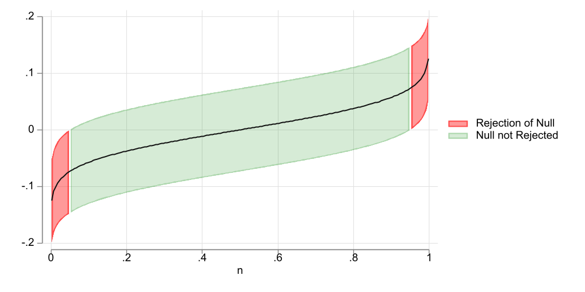

Confidence intervals (CI), also known as interval estimates, are ranges of values that provided along point estimates as potential values for population parameters, based on the estimation method, level of confidence, and degree of precision of those estimates.
One usual confusion that arises from CI is its interpretation. Its important to emphasize that CI are just estimates, and are not guaranteed to contain the true estimate.
For example, when we say the estimate for \(\alpha\) is 1 with a 95% CI of \((-.5,.5)\), it doesnt mean that the true parameter will be contained in that confidence interval with a 95% probability.
Instead, it means that if we repeat the sampling excercise a large number of times, and construct a CI of the same level, it will contain the true parameter 95% of the time.
Code
clearsetscheme white2setobs 200genp = (_n*2-1)/(2*_N)gensd = (1/sqrt(500))gen b1 = invnormal(p)*sdgen ll=b1-sd*invnormal(0.95)gen uu=b1+sd*invnormal(0.95)gen n=ptwo (rarea ll uu n if uu<0,color(red%50)) (rarea ll uu n if ll>0,color(red%50)) /// (rarea ll uu n ifinrange(0,ll,uu), color(green%20)) (line b1 n, color(gs1)) , ///legend(order(1 "Rejection of Null" 3 "Null not Rejected")) graphexport uci1.png, width(1000) height(500) replace

Figure 1: 90% CI
As an example, Figure 1 shows a 90% Confidence intervals for a coefficient that by construction has a true value of zero. When considering the CI, the middle 90% of the coefficients contain the true paramater of zero. But the upper and lower 5% do not. Thus, with a 90% confidence interval, we have 10% chances of rejecting the Null when it is true.
The Problem of Simultaneous hypothesis
While CI are useful to understand the level of precision of an estimate, they are not a good tool when one is interest in testing multiple hypothesis at the same time.
Consider the following example:
Say that you have access to two independent sources of data, and you test the same hypothesis in both. Say, on top of this, that you use 90% confidence intervals to make your hypothesis. How likely is that either of the test will come as possitve?
The answer in this case is straigh forward. The chances that the first estimator will be a false positive: 10%. When negative (90%) there is also a 10% chance of being a false positive, in the second sample: \(10%+90%*10%=19%\). So using a second sample, almost doubles the probability of finding a false significant result.
Let’s take the excercise a bit farther. If we run the same experiment on 7 different samples, the chances of finding a possitive results is now over 50%. Its easy to see that one can very easily falsify results by just adding the number of samples used for the analysis.1
What other alternatives do we have? Well, there are at least 2:
Use joint hypothesis tests (wald-test). This will adjust for possible correlations (or lack there of) among the estimated parameters, and provide a single statistic that tests if at least one of the parameters is different from zero.
Use Simultaneous Confidence Intervals, which adjusts standard critical values, so that only \(\alpha%\) of the cases we jointly rejected coefficients of interest. I like to think of this as a way to translate joint tests into single hypothesis testing.
How will this work?
Lets reconsider the previous example. When I have two independent samples the naive joint share of false significance tests would be given by:
where \(1-\alpha_j\) is the level of confidence you would normaly used for single Hypothesis testing.
Now, we know \(\alpha_j\) is to high, and that it has to be the same for both groups. Our goal is find an appropriate \(\alpha_j\), so that the joint probability of false positive is 5% (\(\alpha_{12}\)):
Which suggest the level of significance we need to use on each individual sampe should be:
\[\alpha = 1-\sqrt{1-\alpha_{12}}\]
For the previous case, if one is trying to use a 90% confidence interval, we need to set \(\alpha_{12}\) at 10% (0.1). Which implies that for each individual test we need to use an \(\alpha\) at 0.0513 or 5.13%. Which is almost half of what we started with.
Of course, if you have more than 2 coefficients you need testing, or if there are some correlations among them, the formula above may need to be adjusted. (some approaches do something like that)
UCI via Influence Functions (IF)
The first time I came through the idea of uniform confidence Intervals was when I started working with csdid (@callaway_santanna_2021), where both standard errors and confidence intervals are estimated via Influence functions.
This is done as follows:
Derive the influence functions of your estimator.
Use a multiplicative wildbootstrap to disturb the IF, estimate standard errors and absolute value of t-statistics for all your parameters.
For each iteration of the wildbootstrap, choose the largest t-statistic. You have now a single column of t-statistics.
From this new variable choose the (\(1-\alpha\)) percentile. This will be your new critical value.
Re-estimate your Confidence intervals.
Because the new critical value was constructed by looking at the highest t-stat, it will have a the same properties as the manual significance level I provided above.
Here a small example of how it works.
sysuse auto, cleargen one=1mata x =st_data(.,"mpg foreign one")y =st_data(.,"price") n = rows(y) xx =cross(x,x); xy =cross(x,y) ixx=invsym(xx) b =ixx*xy; e = y:-x*b iff = 74*(x:*e)*ixx iffm=J(1000,3,0)for(i=1;i<=1000;i++){ iffm[i,]=mean(iff:*rnormal(n,1,0,1)) } se=diagonal(variance(iffm):^.5)' ts=abs(iffm:/se);ts=rowmax(ts);_sort(ts,1) tcrit=ts[ceil(0.95*rows(ts))] st_matrix("tbl", (b,se',b:-tcrit*se',b:+tcrit*se'))end
First, I estimate the influence function iff for the model coefficients. Then, I disturb them using a standard normal noise. I estimate standard errors and t-statistics based on the disturb data iffm, and obtain the adjusted critical value tcrit. This critical value is then used to reconstruct the confidence intervals.
I compare the results from the regression analysis, with the adjusted critical value. And, as expected, they are a bit wider than the original confidence interval.
Via Simulation
The strategy I show above is relatively simple if you know how to estimate the IF. However, beyond simple statistics, obtaining them may be too involved for the average user.
So, one alternative I’m suggesting here is to do the same, but via simulation.
For any regression analysis obtain the matrix of coefficients b and variance covariance V.
Draw N normal distributed samples with mean zero and Variance covariance V.
Obtain the z/t statistic from the simulated coefficients, and the model estimated variance matrix.
Just like before, obtain the new critical value, based on the new set of t-statistics, and adjust the Confidence intervals!
Here is where my new command uci comes into play. First, you may need to install it using fra. Also if you want to use fra please see here for instructions:
fra install uci, replace
checking uci consistency and verifying not already installed...
installing into c:\ado\plus\...
installation complete.
The command does not have a helpfile yet, but its use is straigh forward.
If you run it after any regression command, it will take the information from that regression and obtain the modified confidence intervals.
If one wants to do it using other pre-saved information, one can do so using the option bmatrix() and vmatrix().
One can choose how many repetitions to run, using reps(#), where the default is 999
Its possible to set a seed using rseed() for cases where replication is needed.
You can also set the level of confidence intervals level(#), where the default is 95.
So, let me redo the above example:
reg price mpg foreign, robustuci
Linear regression Number of obs = 74
F(2, 71) = 12.72
Prob > F = 0.0000
R-squared = 0.2838
Root MSE = 2530.9
------------------------------------------------------------------------------
| Robust
price | Coefficient std. err. t P>|t| [95% conf. interval]
-------------+----------------------------------------------------------------
mpg | -294.1955 60.33645 -4.88 0.000 -414.503 -173.8881
foreign | 1767.292 607.7385 2.91 0.005 555.4961 2979.088
_cons | 11905.42 1362.547 8.74 0.000 9188.573 14622.26
------------------------------------------------------------------------------
Uniform Confidence Intervals based on Simulation
rtable2[3,5]
b se t ll lu
mpg -294.19553 60.336453 -4.8759169 -434.12725 -154.26381
foreign 1767.2922 607.73848 2.9079815 357.83104 3176.7534
_cons 11905.415 1362.5472 8.7376169 8745.409 15065.422
Repetitions:999
Level:95
new T:2.31919
This provides a slighly different results, because of how standard errors are estimated, and the random nature bootstrap procedure, but it should be a good approximation to the Uniform Confidence intervals.
Conclusions
This aims to provide a small description of what Uniform confidence intervals are, and how to estimate them.
It also introduces a new small command, uci, which should help to estimate this type of confidence intervals, for almost any model.
Comments and suggestions are welcome.
Til next time.
Footnotes
This will not happen if we just increase the sample↩︎
Source Code
---title: "Simultaneous/Uniform Confidence Intervals"subtitle: "Featuring `uci`"format: htmlcode-fold: true---## IntroductionConfidence intervals (**CI**), also known as interval estimates, are ranges of values that provided along point estimates as potential values for population parameters, based on the estimation method, level of confidence, and degree of precision of those estimates.One usual confusion that arises from CI is its interpretation. Its important to emphasize that CI are just estimates, and are not guaranteed to contain the true estimate. For example, when we say the estimate for $\alpha$ is 1 with a 95% CI of $(-.5,.5)$, it doesnt mean that the true parameter will be contained in that confidence interval with a 95% probability. Instead, it means that if we repeat the sampling excercise a large number of times, and construct a CI of the same level, it will contain the true parameter 95% of the time. ```{stata}*| output: falseclearset scheme white2set obs 200gen p = (_n*2-1)/(2*_N)gen sd = (1/sqrt(500))gen b1 = invnormal(p)*sdgen ll=b1-sd*invnormal(0.95)gen uu=b1+sd*invnormal(0.95)gen n=ptwo (rarea ll uu n if uu<0,color(red%50)) (rarea ll uu n if ll>0,color(red%50)) /// (rarea ll uu n if inrange(0,ll,uu), color(green%20)) (line b1 n, color(gs1)) , /// legend(order(1 "Rejection of Null" 3 "Null not Rejected")) graph export uci1.png, width(1000) height(500) replace```{#fig-uc1}As an example, @fig-uc1 shows a 90% Confidence intervals for a coefficient that by construction has a true value of zero. When considering the CI, the middle 90% of the coefficients contain the true paramater of zero. But the upper and lower 5% do not. Thus, with a 90% confidence interval, we have 10% chances of rejecting the Null when it is true. ## The Problem of Simultaneous hypothesisWhile **CI** are useful to understand the level of precision of an estimate, they are not a good tool when one is interest in testing multiple hypothesis at the same time. Consider the following example:> Say that you have access to two independent sources of data, and you test the same hypothesis in both. Say, on top of this, that you use 90% confidence intervals to make your hypothesis. How likely is that either of the test will come as possitve?The answer in this case is straigh forward. The chances that the first estimator will be a false positive: 10%. When negative (90%) there is also a 10% chance of being a false positive, in the second sample: $10%+90%*10%=19%$. So using a second sample, almost doubles the probability of finding a *false* significant result. Let's take the excercise a bit farther. If we run the same experiment on 7 different samples, the chances of finding a possitive results is now over 50%. Its easy to see that one can very easily falsify results by just adding the number of samples used for the analysis.^[This will not happen if we just increase the sample]What other alternatives do we have? Well, there are at least 2:- Use joint hypothesis tests (wald-test). This will adjust for possible correlations (or lack there of) among the estimated parameters, and provide a single statistic that tests if at least one of the parameters is different from zero.- Use Simultaneous Confidence Intervals, which adjusts standard critical values, so that only $\alpha%$ of the cases we jointly rejected coefficients of interest. I like to think of this as a way to translate joint tests into single hypothesis testing. ## How will this work?Lets reconsider the previous example. When I have two independent samples the naive joint share of false significance tests would be given by:$$\alpha_{12} = \alpha_1 + (1-\alpha_1)* \alpha_2$$where $1-\alpha_j$ is the level of confidence you would normaly used for single Hypothesis testing. Now, we know $\alpha_j$ is to high, and that it has to be the same for both groups. Our goal is find an appropriate $\alpha_j$, so that the joint probability of false positive is 5% ($\alpha_{12}$):$$\alpha_{12}= \alpha + (1-\alpha)* \alpha = 2\alpha - \alpha^2$$Which suggest the level of significance we need to use on each individual sampe should be:$$\alpha = 1-\sqrt{1-\alpha_{12}}$$For the previous case, if one is trying to use a 90% confidence interval, we need to set $\alpha_{12}$ at 10% (0.1). Which implies that for each individual test we need to use an $\alpha$ at 0.0513 or 5.13%. Which is almost half of what we started with. Of course, if you have more than 2 coefficients you need testing, or if there are some correlations among them, the formula above may need to be adjusted. (some approaches do something like that)## UCI via Influence Functions (IF)The first time I came through the idea of uniform confidence Intervals was when I started working with `csdid` (@callaway_santanna_2021), where both standard errors and confidence intervals are estimated via Influence functions.This is done as follows:1. Derive the influence functions of your estimator.2. Use a multiplicative wildbootstrap to disturb the IF, estimate standard errors and absolute value of t-statistics for all your parameters.3. For each iteration of the wildbootstrap, choose the largest t-statistic. You have now a single column of t-statistics.4. From this new variable choose the ($1-\alpha$) percentile. This will be your new critical value.5. Re-estimate your Confidence intervals.Because the new critical value was constructed by looking at the highest t-stat, it will have a the same properties as the manual significance level I provided above.Here a small example of how it works.```{stata}*| code-fold: false*| output: falsesysuse auto, cleargen one=1mata x =st_data(.,"mpg foreign one") y =st_data(.,"price") n = rows(y) xx =cross(x,x); xy =cross(x,y) ixx=invsym(xx) b =ixx*xy; e = y:-x*b iff = 74*(x:*e)*ixx iffm=J(1000,3,0) for(i=1;i<=1000;i++){ iffm[i,]=mean(iff:*rnormal(n,1,0,1)) } se=diagonal(variance(iffm):^.5)' ts=abs(iffm:/se);ts=rowmax(ts);_sort(ts,1) tcrit=ts[ceil(0.95*rows(ts))] st_matrix("tbl", (b,se',b:-tcrit*se',b:+tcrit*se'))end``````{stata}reg price mpg foreign, robustmatrix rowname tbl =mpg foreign consmatrix colname tbl =b se ll uumatrix list tblmata:"Adjusted Critical Value"mata:tcrit```First, I estimate the influence function `iff` for the model coefficients. Then, I disturb them using a standard normal noise. I estimate standard errors and t-statistics based on the disturb data `iffm`, and obtain the adjusted critical value `tcrit`. This critical value is then used to reconstruct the confidence intervals. I compare the results from the regression analysis, with the adjusted critical value. And, as expected, they are a bit wider than the original confidence interval.## Via SimulationThe strategy I show above is relatively simple if you know how to estimate the **IF**. However, beyond simple statistics, obtaining them may be too involved for the average user.So, one alternative I'm suggesting here is to do the same, but via simulation.1. For any regression analysis obtain the matrix of coefficients `b` and variance covariance `V`.2. Draw **N** normal distributed samples with mean zero and Variance covariance `V`. 3. Obtain the **z/t** statistic from the simulated coefficients, and the model estimated variance matrix.4. Just like before, obtain the new critical value, based on the new set of **t-statistics**, and adjust the Confidence intervals!Here is where my new command `uci` comes into play. First, you may need to install it using `fra`. Also if you want to use `fra` please see [here](https://friosavila.github.io/chatgpt/fra_03_30_2023/) for instructions:```{stata}*| code-fold: falsefra install uci, replace```The command does not have a helpfile yet, but its use is straigh forward. - If you run it after any regression command, it will take the information from that regression and obtain the modified confidence intervals.- If one wants to do it using other pre-saved information, one can do so using the option `bmatrix()` and `vmatrix()`. - One can choose how many repetitions to run, using `reps(#)`, where the default is 999- Its possible to set a seed using `rseed()` for cases where replication is needed.- You can also set the level of confidence intervals `level(#)`, where the default is 95.So, let me redo the above example:```{stata}*| code-fold: falsereg price mpg foreign, robustuci```This provides a slighly different results, because of how standard errors are estimated, and the random nature bootstrap procedure, but it should be a good approximation to the Uniform Confidence intervals.## ConclusionsThis aims to provide a small description of what Uniform confidence intervals are, and how to estimate them.It also introduces a new small command, `uci`, which should help to estimate this type of confidence intervals, for almost any model.Comments and suggestions are welcome.Til next time.